Selenium前置設定
首先如果要先使用selenium，我們要先下載webdriver在資料夾中給予selenium使用。
https://chromedriver.chromium.org/downloads
上述網址即為chrome的webdriver下載地點。
下載好webdriver後我們就可以把他的exe檔丟到code的資料夾中了，就像這樣。
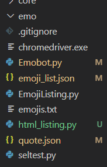
接著我們就可以準備import了。
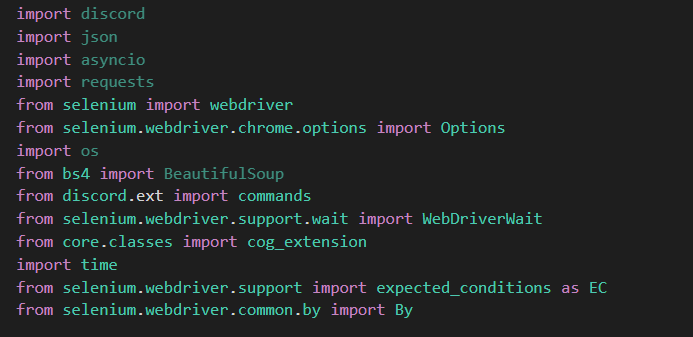
像這樣，其中webdriver就是引入我們剛剛載的webdriver，
Options則是selenium針對不同webdriver所納入的不同設定，
WebDriverWait跟EC則是在讓瀏覽器等待時會用到，像是我們可能會需要等到某網頁元素完整載入後才繼續程式，否則可能就會出錯，
最後By則是selenium中的內部語法，像是這樣，
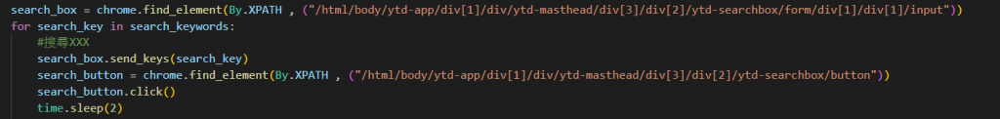
這就表示著find_element這個函式將用XPath的方式定位元素。
Selenium的指令使用
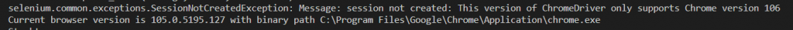
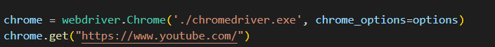
首先我們先如上圖，套入webdriver的設定，讓程式載入我們先前載的chrome webdriver，接著再讓他導到我們想要的網址，這邊以youtube作範例。如果成功的話應該會如下圖這樣。 阿記得開完網址後要time.sleep()一下，才不會直接跳掉。 其實在之後我們對selenium操控時，也必須要定時的time.sleep()或者是利用別的方法讓程式暫停，否則就會產生網頁還沒完全載入，我們就要找到他的元素等等的尷尬事情。開完網頁後，就來介紹第一個函式，find_element
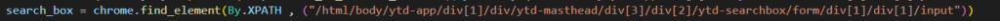
find_element可以讓selenium定位到特定網頁元素，這邊的例子就是yt的搜尋欄。
其實selenium可以透過非常多方式定位，像是html碼裡的id、name等等，或者是class、css等其他方法，那麼我們這邊就用xpath這種定位方式，較為直接準確。但其實這邊範例比較不好的一點是xpath採用了絕對位置來定位，事實上，我們可以利用xpath的相對位置來達到簡潔、準確、可變動的性質，則之後在提及xpath時會在講解。
再來，既然我們定位到了網頁元素，則我們就要發揮selenium的強項了，就是模擬使用者對網頁的互動，這邊我們透過下圖講解兩個例子。
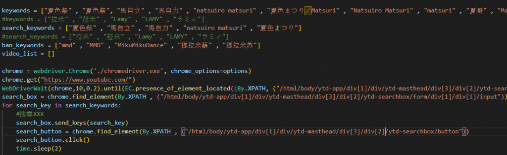
這邊我們的目標是要進去yt，蒐集不同關鍵字搜尋後的影片，因此我們先建立一個list做作search_keys，裡面有著我們之後要輸入進搜尋欄的搜尋關鍵字。
則首先是element.send_keys()，我們先定位到搜尋欄位置後，將其命名為search_box，則search_box.send_keys()就能讓我們輸入關鍵字進去。
再來就是element.click()，在輸入進去後，我們還要再定位到yt網頁的搜尋按鈕上，在這裡，我們將其命名為search_box，則search_box.click()就能讓selenium模擬使用者對著搜尋按鈕按下滑鼠左鍵的這個動作。
就像這樣
其實只要有這基本的動作，我們就能讓selenium動起來了，就像真人一樣互動，當然selenium還有更多的功能，像是WebDriverWait等等的功能，但這邊就不多做贅述了，我們明天會在講使用selenium常遇到的問題，其實很多都跟網頁載入時間有關。
喔對了，突然想到的小補充，上圖的範例其實就是之後其中一個專題內容，目標正是要讓selenium幫我們整理出想要的影片並輸出到discord上，因此也可以預見之後的專題應該會出現很多vt剪輯。
Selenium的常見Bug
首先，第一個是版本問題，這其實是我前天在挖之前的程式出來跑時才發現的問題，
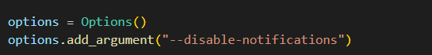
這問題基本上是driver跟瀏覽器版本不支援，最簡單只要重新下載對應版本的webdriver就好。
接著是這個，
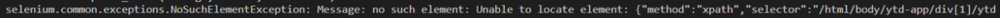
這代表著selenium無法找到你所指定的元素，一般來說，如果不是你定位位置錯誤，
八成就是網頁還沒有完整載入，就使selemium搜尋元素。
此時，我們可以試著使用簡單的方法，time.sleep()，使程式整體暫停n秒，也可以配合try except使用。
當然，selenium針對這個問題也有開發相關函式，首先是顯式等待，
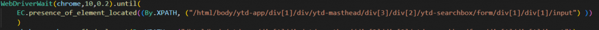
在這邊的意思是，我們針對所給予的元素，等待10秒，每0.2秒檢查是否出現，如果出現了就繼續，
如果10秒內還沒出現則報錯。
另外一種則是隱式等待，
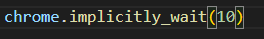
相對於顯式等待是針對個別元素是否生成，隱式等待則是針對整個頁面，以上圖為例，這邊就是讓整個程式暫停，
給予瀏覽器10秒的時間，如果10秒內”整個頁面都已經生成完成”(講得直白一點其實就是我們頁面左上角的圈圈不再轉動)，則繼續程式運行，如果10內還沒載完，則報錯，因此可以看的出來，相對於顯式等待，隱式等待跟強制等待可能會要花費更久的時間。